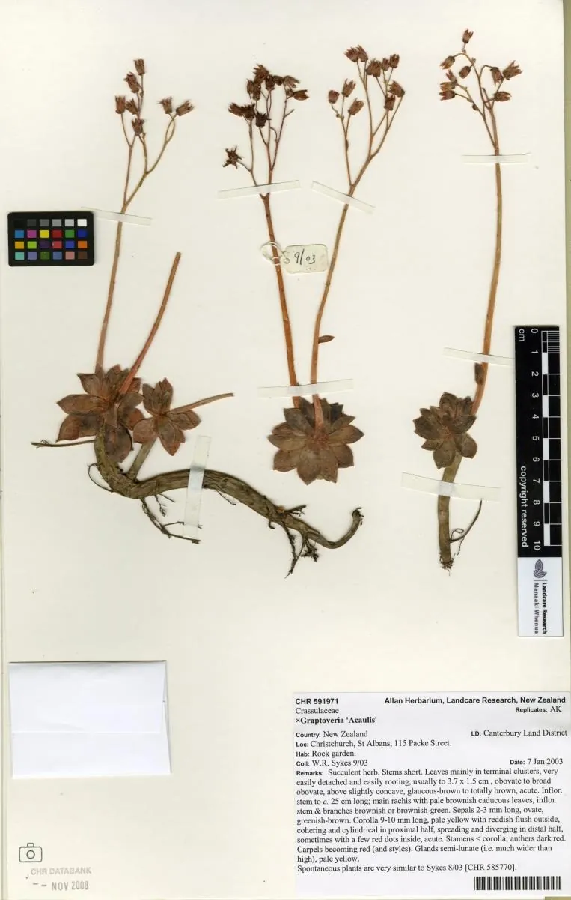

多肉植物 · 植物界
白牡丹 Graptoveria 'Titubans'

景天科风车石莲属多肉，叶片灰绿色、覆白粉，莲座紧凑，由风车草属与拟石莲花属杂交而来，是容易群生的经典普货。
- 分类
- 门被子植物门纲木兰纲目虎耳草目科景天科属风车石莲属
- 栖息环境
- 园艺杂交种，喜光、耐旱、怕闷热积水
- 地理分布
- 世界各地广泛盆栽，中国各地多肉市场常见
- 保护级别
- 暂无评估（园艺杂交种）
物种志
白牡丹为景天科风车石莲属的多年生肉质草本，是风车草属与拟石莲花属的杂交种。叶片倒卵形，长 2–4 厘米，先端具短尖，叶面灰绿色，覆一层白色蜡粉，叶尖在光照充足时泛红。叶片紧密排列成莲座状，直径 5–8 厘米，老株下部叶片脱落，形成短茎并群生。花梗自叶腋抽出，花淡黄色，花期春季；果实为蓇葖果。
白牡丹喜阳光充足、凉爽干燥和通风良好的环境，耐旱、怕积水，夏季高温时需遮阴控水。它株型小巧、容易群生，叶色灰绿素雅，是新手入门的经典多肉之一。栽培用疏松透气的颗粒土，生长期干透浇透，冬季保持 5℃ 以上；繁殖以叶插和分株为主，叶片平放在微潮土面即可生根，成活率很高。
形态与习性
- 冠幅莲座直径 5–8 厘米
- 叶片倒卵形，灰绿色，覆白粉
- 花期春季，花淡黄色
- 光照喜充足光照，夏季遮阴
- 水分耐旱，干透浇透
- 土壤疏松透气的颗粒土
- 繁殖叶插、分株，叶插成活率高
- 特点容易群生，形成多头老桩
趣味知识
- 白牡丹是风车草属与拟石莲花属的杂交种，兼具双亲的优点。
- 它叶插成活率很高，一片完整叶片就能长成新株。
- 白牡丹容易群生，养成老桩后枝头会形成多个小莲座。